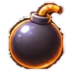
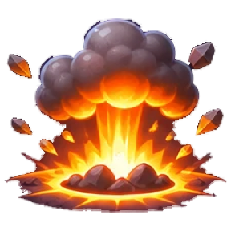

Cosmetic Studio — art & audio review
PerfectTap Cosmetic Studio (Quack Attack, Purrfect Tap, Boom Mode). Generated by
scripts/cosmetics/build_review_page.py from design/cosmetics/asset_manifest.json and
ios/PerfectTap/Resources/Sounds/audio_manifest.json. Works offline: open this file in Safari or Chrome.
How to review / what to approve
- Art. For each graphic, check it on the dark tile (how the game shows it) and on the checkerboard
(stray halo, cut-off edges — e.g. QA-09: emblem bottoms are cut flat). Decide per asset: approve as-is,
replace (spec:
docs/cosmetics/ART_REPLACEMENT_SPEC.md), or drop. - Audio. Listen on an iPhone speaker and headphones if you can (a browser on a laptop is a rough guide only). The “Gameplay trigger” column says exactly when each sound plays. Decide per sound: approve, needs sound designer, or drop. Rows marked “needs sound designer” are the weakest.
- Unused
_tapsounds. Decide: remove them, or keep them for a future deliberate tap layer (gameplay change, separate decision). - Rights. Confirm ownership/licence of the concept sheet. The sounds are original project work.
The checkboxes below are a scratch pad only: they are not saved anywhere.
Graphics (13 produced)
Quack Attack
cos_quack_life provisional
- Collection
- Quack Attack
- Slot · field
lifeIcon·imageName(life icon (active))- Gameplay
- Lives HUD (lives modes): one icon per remaining life, 22 pt (≤19 pt with 5 lives in Rush). Also Studio collection/item cards and Preview Studio.
- Canvas
- 24 pt square
- Files
- @2x 48x48 px (4.9 KB), @3x 72x72 px (9.7 KB) — total 14.6 KB
- Source
- cut from the concept sheet; @3x is 1.05× the source pixels (upscaled — soft)
- Readiness
- provisional — replace with production art (see ART_REPLACEMENT_SPEC.md)
cos_quack_life_lost provisional
- Collection
- Quack Attack
- Slot · field
lifeIcon·secondaryImageName(life icon (lost))- Gameplay
- Lives HUD: a lost life slot, shown right after a miss that costs a life.
- Canvas
- 24 pt square
- Files
- @2x 48x48 px (4.4 KB), @3x 72x72 px (8.3 KB) — total 12.7 KB
- Source
- cut from the concept sheet; @3x is 1.08× the source pixels (upscaled — soft)
- Readiness
- provisional — replace with production art (see ART_REPLACEMENT_SPEC.md)
cos_quack_emblem provisional
- Collection
- Quack Attack
- Slot · field
tapButton·emblemImageName(tap-button emblem)- Gameplay
- Tap button, every tap of every round: drawn left of the TAP! label at 1.05 × button height (84 pt on the 80 pt button), lifted 8 pt. Also Studio cards (56 pt button) and Preview Studio.
- Canvas
- 72 pt square
- Files
- @2x 144x144 px (22.2 KB), @3x 216x216 px (44.2 KB) — total 66.4 KB
- Source
- cut from the concept sheet; @3x is 1.03× the source pixels (upscaled — soft)
- Readiness
- provisional — replace with production art (see ART_REPLACEMENT_SPEC.md)
cos_quack_feather provisional
- Collection
- Quack Attack
- Slot · field
lifeLostEffect·imageName(effect sprite (feather))- Gameplay
- Life Lost effect: 4–6 feather sprites (≈40–50 pt) burst from the lives HUD on a miss that costs a life.
- Canvas
- 36 pt square
- Files
- @2x 72x72 px (6.2 KB), @3x 108x108 px (12.9 KB) — total 19.1 KB
- Source
- cut from the concept sheet; @3x is 0.84× the source pixels
- Readiness
- provisional — replace with production art (see ART_REPLACEMENT_SPEC.md)
cos_quack_gameover provisional
- Collection
- Quack Attack
- Slot · field
gameOverEffect·imageName(effect sprite (sad duck))- Gameplay
- Game Over effect: one sprite (≈1.5 × effect radius, up to ≈135–165 pt wide) on the Game Over screen once per round (not on quit, not with Visual Effects off).
- Canvas
- 96 pt square
- Files
- @2x 192x192 px (30.4 KB), @3x 288x288 px (59.3 KB) — total 89.7 KB
- Source
- cut from the concept sheet; @3x is 1.33× the source pixels (upscaled — soft)
- Readiness
- provisional — replace with production art (see ART_REPLACEMENT_SPEC.md)
Purrfect Tap
cos_paw_life provisional
- Collection
- Purrfect Tap
- Slot · field
lifeIcon·imageName(life icon (active))- Gameplay
- Lives HUD (lives modes): one icon per remaining life, 22 pt (≤19 pt with 5 lives in Rush). Also Studio collection/item cards and Preview Studio.
- Canvas
- 24 pt square
- Files
- @2x 48x48 px (4.9 KB), @3x 72x72 px (9.8 KB) — total 14.7 KB
- Source
- cut from the concept sheet; @3x is 1.03× the source pixels (upscaled — soft)
- Readiness
- provisional — replace with production art (see ART_REPLACEMENT_SPEC.md)
cos_paw_life_lost provisional
- Collection
- Purrfect Tap
- Slot · field
lifeIcon·secondaryImageName(life icon (lost))- Gameplay
- Lives HUD: a lost life slot, shown right after a miss that costs a life.
- Canvas
- 24 pt square
- Files
- @2x 48x48 px (4.8 KB), @3x 72x72 px (9.0 KB) — total 13.8 KB
- Source
- cut from the concept sheet; @3x is 1.06× the source pixels (upscaled — soft)
- Readiness
- provisional — replace with production art (see ART_REPLACEMENT_SPEC.md)
cos_paw_emblem provisional
- Collection
- Purrfect Tap
- Slot · field
tapButton·emblemImageName(tap-button emblem)- Gameplay
- Tap button, every tap of every round: drawn left of the TAP! label at 1.05 × button height (84 pt on the 80 pt button), lifted 8 pt. Also Studio cards (56 pt button) and Preview Studio.
- Canvas
- 72 pt square
- Files
- @2x 144x144 px (27.4 KB), @3x 216x216 px (54.2 KB) — total 81.6 KB
- Source
- cut from the concept sheet; @3x is 1.26× the source pixels (upscaled — soft)
- Readiness
- provisional — replace with production art (see ART_REPLACEMENT_SPEC.md)
cos_paw_gameover provisional
- Collection
- Purrfect Tap
- Slot · field
gameOverEffect·imageName(effect sprite (dizzy cat))- Gameplay
- Game Over effect: one sprite (≈1.5 × effect radius, up to ≈135–165 pt wide) on the Game Over screen once per round (not on quit, not with Visual Effects off).
- Canvas
- 96 pt square
- Files
- @2x 192x192 px (40.8 KB), @3x 288x288 px (77.9 KB) — total 118.7 KB
- Source
- cut from the concept sheet; @3x is 1.29× the source pixels (upscaled — soft)
- Readiness
- provisional — replace with production art (see ART_REPLACEMENT_SPEC.md)
Boom Mode
cos_boom_life provisional

@3x · 72×72 px · 24 pt- Collection
- Boom Mode
- Slot · field
lifeIcon·imageName(life icon (active))- Gameplay
- Lives HUD (lives modes): one icon per remaining life, 22 pt (≤19 pt with 5 lives in Rush). Also Studio collection/item cards and Preview Studio.
- Canvas
- 24 pt square
- Files
- @2x 48x48 px (4.8 KB), @3x 72x72 px (9.5 KB) — total 14.3 KB
- Source
- cut from the concept sheet; @3x is 0.95× the source pixels
- Readiness
- provisional — replace with production art (see ART_REPLACEMENT_SPEC.md)
cos_boom_life_lost provisional
- Collection
- Boom Mode
- Slot · field
lifeIcon·secondaryImageName(life icon (lost))- Gameplay
- Lives HUD: a lost life slot, shown right after a miss that costs a life.
- Canvas
- 24 pt square
- Files
- @2x 48x48 px (4.4 KB), @3x 72x72 px (8.2 KB) — total 12.6 KB
- Source
- cut from the concept sheet; @3x is 0.95× the source pixels
- Readiness
- provisional — replace with production art (see ART_REPLACEMENT_SPEC.md)
cos_boom_emblem provisional
- Collection
- Boom Mode
- Slot · field
tapButton·emblemImageName(tap-button emblem)- Gameplay
- Tap button, every tap of every round: drawn left of the TAP! label at 1.05 × button height (84 pt on the 80 pt button), lifted 8 pt. Also Studio cards (56 pt button) and Preview Studio.
- Canvas
- 72 pt square
- Files
- @2x 144x144 px (26.8 KB), @3x 216x216 px (51.4 KB) — total 78.1 KB
- Source
- cut from the concept sheet; @3x is 1.28× the source pixels (upscaled — soft)
- Readiness
- provisional — replace with production art (see ART_REPLACEMENT_SPEC.md)
cos_boom_gameover provisional

@3x · 288×288 px · 96 pt- Collection
- Boom Mode
- Slot · field
gameOverEffect·imageName(effect sprite (mushroom boom))- Gameplay
- Game Over effect: one sprite (≈1.5 × effect radius, up to ≈135–165 pt wide) on the Game Over screen once per round (not on quit, not with Visual Effects off).
- Canvas
- 96 pt square
- Files
- @2x 192x192 px (56.3 KB), @3x 288x288 px (110.8 KB) — total 167.1 KB
- Source
- cut from the concept sheet; @3x is 1.26× the source pixels (upscaled — soft)
- Readiness
- provisional — replace with production art (see ART_REPLACEMENT_SPEC.md)
Optional button backgrounds (not produced — native rendering)
| Asset id (reserved) | Collection | Field | Why not produced | If commissioned |
|---|---|---|---|---|
cos_quack_button | Quack Attack | imageName | Not produced — native rendering (CosmeticTapButtonSkin draws the button body from the palette). The sheet's buttons have baked "TAP!" text and are ~200×60 px. | Production art optional: text-free PNG ≥ 1080×240 px (9-slice safe 40 px caps), normal + pressed. |
cos_quack_button_pressed | Quack Attack | secondaryImageName | Not produced — native rendering (CosmeticTapButtonSkin draws the button body from the palette). The sheet's buttons have baked "TAP!" text and are ~200×60 px. | Production art optional: text-free PNG ≥ 1080×240 px (9-slice safe 40 px caps), normal + pressed. |
cos_paw_button | Purrfect Tap | imageName | Not produced — native rendering (CosmeticTapButtonSkin draws the button body from the palette). The sheet's buttons have baked "TAP!" text and are ~200×60 px. | Production art optional: text-free PNG ≥ 1080×240 px (9-slice safe 40 px caps), normal + pressed. |
cos_paw_button_pressed | Purrfect Tap | secondaryImageName | Not produced — native rendering (CosmeticTapButtonSkin draws the button body from the palette). The sheet's buttons have baked "TAP!" text and are ~200×60 px. | Production art optional: text-free PNG ≥ 1080×240 px (9-slice safe 40 px caps), normal + pressed. |
cos_boom_button | Boom Mode | imageName | Not produced — native rendering (CosmeticTapButtonSkin draws the button body from the palette). The sheet's buttons have baked "TAP!" text and are ~200×60 px. | Production art optional: text-free PNG ≥ 1080×240 px (9-slice safe 40 px caps), normal + pressed. |
cos_boom_button_pressed | Boom Mode | secondaryImageName | Not produced — native rendering (CosmeticTapButtonSkin draws the button body from the palette). The sheet's buttons have baked "TAP!" text and are ~200×60 px. | Production art optional: text-free PNG ≥ 1080×240 px (9-slice safe 40 px caps), normal + pressed. |
Sounds (33 files, 855.5 KB)
Players are browser-playable WAV copies (afconvert -f WAVE -d LEI16, same samples) in design/cosmetics/review/audio/; “original .caf” links to the file the app ships. The Classic pack has no files (built-in tones, unchanged).
Quack Attack (quack_attack, 11 files, 292.1 KB)
| Sound | Event | Gameplay trigger | Duration | Size (CAF) | Status | Listen |
|---|---|---|---|---|---|---|
quack_attack_good_v1soft quack, ±3 % pitch / formant per variant |
good v1 | GOOD tap (round-robin v1 → v2 → v3). Preview Studio: the tap button and “Good”. | 120 ms | 14.3 KB | provisional · needs sound designer | original .caf |
quack_attack_good_v2soft quack, ±3 % pitch / formant per variant |
good v2 | GOOD tap (round-robin v1 → v2 → v3). Preview Studio: the tap button and “Good”. | 120 ms | 14.3 KB | provisional · needs sound designer | original .caf |
quack_attack_good_v3soft quack, ±3 % pitch / formant per variant |
good v3 | GOOD tap (round-robin v1 → v2 → v3). Preview Studio: the tap button and “Good”. | 120 ms | 14.3 KB | provisional · needs sound designer | original .caf |
quack_attack_great_v1rising, playful quack |
great v1 | GREAT tap, incl. a GREAT that reaches a combo milestone (round-robin v1 → v3). Preview: “Great”. | 150 ms | 16.9 KB | provisional · needs sound designer | original .caf |
quack_attack_great_v2rising, playful quack |
great v2 | GREAT tap, incl. a GREAT that reaches a combo milestone (round-robin v1 → v3). Preview: “Great”. | 150 ms | 16.9 KB | provisional · needs sound designer | original .caf |
quack_attack_great_v3rising, playful quack |
great v3 | GREAT tap, incl. a GREAT that reaches a combo milestone (round-robin v1 → v3). Preview: “Great”. | 150 ms | 16.9 KB | provisional · needs sound designer | original .caf |
quack_attack_perfectdouble rising quack + sparkle pings |
perfect | PERFECT tap, incl. a PERFECT that reaches a combo milestone. Preview: “Perfect”. | 380 ms | 36.7 KB | provisional · needs sound designer | original .caf |
quack_attack_misssubdued low quack |
miss | MISS that does not cost a life, and a broken combo (incl. a Hardcore break on a GOOD). Preview: “Miss”. | 240 ms | 24.7 KB | provisional · needs sound designer | original .caf |
quack_attack_lifeLostwater splash |
lifeLost | MISS that costs a life (lives modes); replaces the miss sound. Preview: “Lose a life”. | 480 ms | 45.3 KB | provisional · owner listen | original .caf |
quack_attack_gameOverdescending “wah-wah” quacks |
gameOver | Round end, as the Game Over screen appears (the final tap's own sound is skipped). Preview: “Game Over”. | 880 ms | 79.8 KB | provisional · needs sound designer | original .caf |
quack_attack_tapshort quack |
tap | UNUSED — gameplay never plays it and the Preview Studio no longer does either (QA-08). Candidate for removal, or for a future deliberate tap layer (owner decision). | 90 ms | 11.8 KB | unused · provisional · needs sound designer | original .caf |
Purrfect Tap (purrfect_tap, 11 files, 282.6 KB)
| Sound | Event | Gameplay trigger | Duration | Size (CAF) | Status | Listen |
|---|---|---|---|---|---|---|
purrfect_tap_good_v1soft pop, ±3 % per variant |
good v1 | GOOD tap (round-robin v1 → v2 → v3). Preview Studio: the tap button and “Good”. | 90 ms | 11.8 KB | provisional · owner listen | original .caf |
purrfect_tap_good_v2soft pop, ±3 % per variant |
good v2 | GOOD tap (round-robin v1 → v2 → v3). Preview Studio: the tap button and “Good”. | 90 ms | 11.8 KB | provisional · owner listen | original .caf |
purrfect_tap_good_v3soft pop, ±3 % per variant |
good v3 | GOOD tap (round-robin v1 → v2 → v3). Preview Studio: the tap button and “Good”. | 90 ms | 11.8 KB | provisional · owner listen | original .caf |
purrfect_tap_great_v1short purr |
great v1 | GREAT tap, incl. a GREAT that reaches a combo milestone (round-robin v1 → v3). Preview: “Great”. | 200 ms | 21.2 KB | provisional · needs sound designer | original .caf |
purrfect_tap_great_v2short purr |
great v2 | GREAT tap, incl. a GREAT that reaches a combo milestone (round-robin v1 → v3). Preview: “Great”. | 200 ms | 21.2 KB | provisional · needs sound designer | original .caf |
purrfect_tap_great_v3short purr |
great v3 | GREAT tap, incl. a GREAT that reaches a combo milestone (round-robin v1 → v3). Preview: “Great”. | 200 ms | 21.2 KB | provisional · needs sound designer | original .caf |
purrfect_tap_perfectchime + synthesized meow |
perfect | PERFECT tap, incl. a PERFECT that reaches a combo milestone. Preview: “Perfect”. | 380 ms | 36.7 KB | provisional · needs sound designer | original .caf |
purrfect_tap_missshort subdued meow |
miss | MISS that does not cost a life, and a broken combo (incl. a Hardcore break on a GOOD). Preview: “Miss”. | 220 ms | 22.9 KB | provisional · needs sound designer | original .caf |
purrfect_tap_lifeLostsoft puff |
lifeLost | MISS that costs a life (lives modes); replaces the miss sound. Preview: “Lose a life”. | 360 ms | 35.0 KB | provisional · owner listen | original .caf |
purrfect_tap_gameOverfading purr into a sad meow |
gameOver | Round end, as the Game Over screen appears (the final tap's own sound is skipped). Preview: “Game Over”. | 850 ms | 77.2 KB | provisional · needs sound designer | original .caf |
purrfect_tap_tapsoft boop |
tap | UNUSED — gameplay never plays it and the Preview Studio no longer does either (QA-08). Candidate for removal, or for a future deliberate tap layer (owner decision). | 90 ms | 11.8 KB | unused · provisional · owner listen | original .caf |
Boom Mode (boom_mode, 11 files, 280.9 KB)
| Sound | Event | Gameplay trigger | Duration | Size (CAF) | Status | Listen |
|---|---|---|---|---|---|---|
boom_mode_good_v1tick, ±3 % per variant |
good v1 | GOOD tap (round-robin v1 → v2 → v3). Preview Studio: the tap button and “Good”. | 70 ms | 10.0 KB | provisional · owner listen | original .caf |
boom_mode_good_v2tick, ±3 % per variant |
good v2 | GOOD tap (round-robin v1 → v2 → v3). Preview Studio: the tap button and “Good”. | 70 ms | 10.0 KB | provisional · owner listen | original .caf |
boom_mode_good_v3tick, ±3 % per variant |
good v3 | GOOD tap (round-robin v1 → v2 → v3). Preview Studio: the tap button and “Good”. | 70 ms | 10.0 KB | provisional · owner listen | original .caf |
boom_mode_great_v1spark crackle |
great v1 | GREAT tap, incl. a GREAT that reaches a combo milestone (round-robin v1 → v3). Preview: “Great”. | 170 ms | 18.6 KB | provisional · owner listen | original .caf |
boom_mode_great_v2spark crackle |
great v2 | GREAT tap, incl. a GREAT that reaches a combo milestone (round-robin v1 → v3). Preview: “Great”. | 170 ms | 18.6 KB | provisional · owner listen | original .caf |
boom_mode_great_v3spark crackle |
great v3 | GREAT tap, incl. a GREAT that reaches a combo milestone (round-robin v1 → v3). Preview: “Great”. | 170 ms | 18.6 KB | provisional · owner listen | original .caf |
boom_mode_perfectcompact impact |
perfect | PERFECT tap, incl. a PERFECT that reaches a combo milestone. Preview: “Perfect”. | 340 ms | 33.3 KB | provisional · owner listen | original .caf |
boom_mode_missfizzle |
miss | MISS that does not cost a life, and a broken combo (incl. a Hardcore break on a GOOD). Preview: “Miss”. | 280 ms | 28.1 KB | provisional · owner listen | original .caf |
boom_mode_lifeLostcartoon explosion |
lifeLost | MISS that costs a life (lives modes); replaces the miss sound. Preview: “Lose a life”. | 480 ms | 45.3 KB | provisional · owner listen | original .caf |
boom_mode_gameOverfinal boom with rumble tail |
gameOver | Round end, as the Game Over screen appears (the final tap's own sound is skipped). Preview: “Game Over”. | 850 ms | 77.2 KB | provisional · owner listen | original .caf |
boom_mode_tapmechanical click + short pop |
tap | UNUSED — gameplay never plays it and the Preview Studio no longer does either (QA-08). Candidate for removal, or for a future deliberate tap layer (owner decision). | 80 ms | 10.9 KB | unused · provisional · owner listen | original .caf |
Unused sounds (3) — owner decision
Gameplay never plays the tap event (every scored tap has a grade), and since QA-08 the Preview Studio tap button plays what a real GOOD tap plays. These files ship in the app but are never heard: unused — candidate for removal or for a future deliberate tap layer (owner decision). Total 34.4 KB.
quack_attack_tap— short quackpurrfect_tap_tap— soft boopboom_mode_tap— mechanical click + short pop